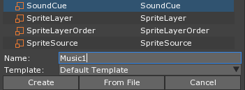
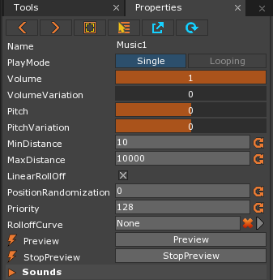
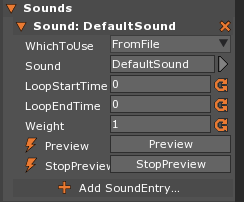
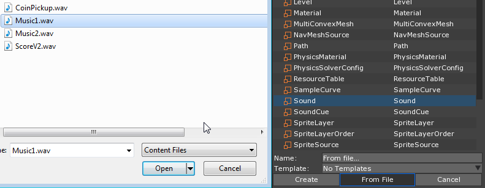
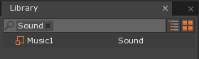
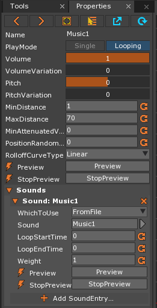
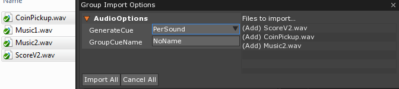
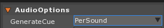

Importing Sounds
There are two ways to import sounds into the Zero editor: by creating new SoundCue and Sound resources or by dragging and dropping soundfile(s) directly into the editor. In this lesson, we’ll be looking at both of these options in detail.
Create a New Project
Adding a SoundCue Resource
- Add a new SoundCue resource named:
Music1

Our new SoundCue is displayed in the Properties Window:

There is currently no Sound added to the Music1 SoundCue that we just created.
- In the Properties Window
- Under Sounds
Left Clickthe Add SoundEntry... area
- Under Sounds
The DefaultSound is now added to the Music1 SoundCue. Not only do we have our own version of the DefaultCue, but we now have access to more properties to specify how the sound will be played, as seen here:

Adding a Sound Resource
Now lets add some sound files.
Download the Sounds for this lesson
- Import the provided Sound resource named:
Music1.wav

The new Sound is added to the Library Window under the Sound tag.

In the Library Window
- Under the SoundCue tag
Double Left ClickMusic1
- Under the SoundCue tag
In the Properties Window
Under Sounds
Under Sound: DefaultSound
- Set Sound to:
Music1

- Set Sound to:
The Music1 Sound we just added to the project is now being played instead of the DefaultSound. We now have background music.
Now we’ll look at the second way of importing Sounds and creating SoundCues by importing multiple files as a group.
Importing Multiple Sound Files with Drag and Drop
- Make sure the Level Window is visible
- Drag and Drop the following files from the same folder where Music1 was located (not in the editor but from your computer) onto the Level Window:
- Music2.wav
- CoinPickup.wav
- ScoreV2.wav
The following window should appear:

This convenient feature allows us to specify import options for the group of files. There is an option that allows us to tell the Zero Engine to create a Cue for each Sound file automatically.
In the Group Import Options Window
Under AudioOptions
- Set GenerateCue to:
PerSound

Left Clickthe Import All button
- Set GenerateCue to:
The Sound files have been imported and each has a corresponding SoundCue.